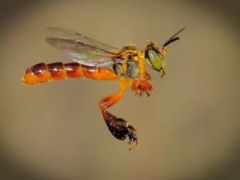
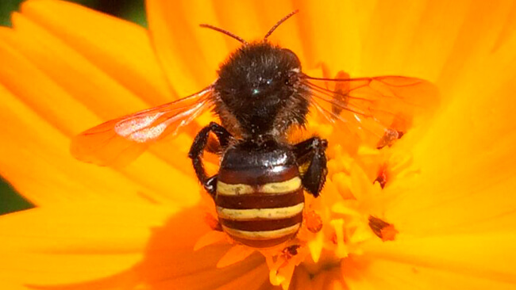
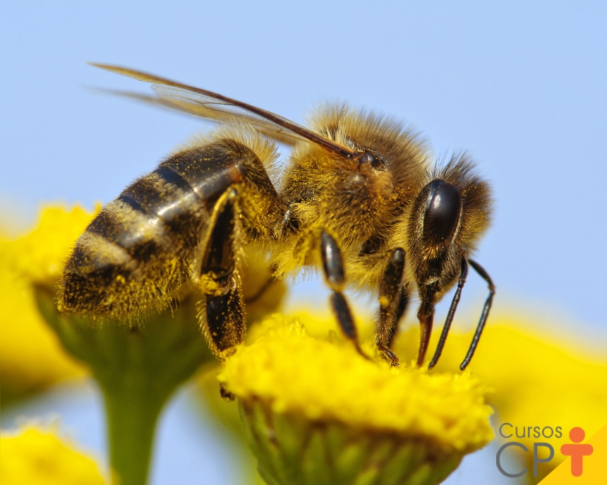
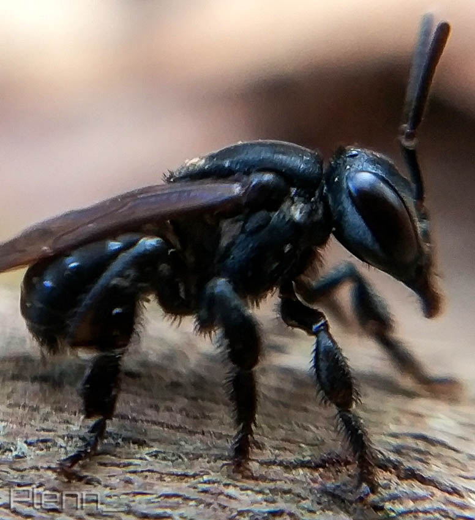

Conheça as polinizadoras brasileiras e seu papel no agronegócio

Tetragonisca angustula
A Jataí é uma abelha sem ferrão nativa muito mansa. Ela é fundamental para a polinização de plantas nativas e culturas agrícolas, como café, frutas e hortaliças

Melipona quadrifasciata
A Mandaçaia é uma abelha sem ferrão nativa robusta e muito mansa. Ela é fundamental para a polinização de plantas nativas e culturas agrícolas, como o tomate, a pimenta e o pimentão.

Melipona rufiventris
A Uruçu-Amarela é uma abelha sem ferrão nativa imponente e muito mansa. Ela é fundamental para a polinização de plantas nativas e culturas agrícolas, como o morango, o girassol e árvores frutíferas nativas.

Scaptotrigona bipunctata
A Tubuna é uma abelha sem ferrão nativa bastante ativa e muito mansa. Ela é fundamental para a polinização de plantas nativas e culturas agrícolas, como a maçã, a pera e diversas espécies de árvores da Mata Atlântica.